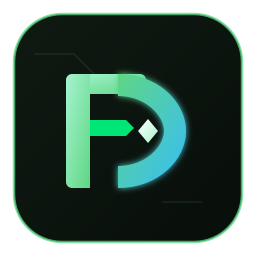

Проверить накопитель
Проверить реальную ёмкость USB или SD и измерить скорость чтения и записи.

FileDOAdvanced File & Storage Operations Tool УстановитьWindows CLI и GUI
Проверка накопителей и операции с файлами для Windows, когда перед данными нужно понять, можно ли доверять USB, SD, HDD или папке.
Установщик без цифровой подписи: почему так и что нажать
Возможности
Операции сгруппированы по задаче. Проверки и отчёты не изменяют данные; удаление и очистка запускаются отдельно.
Проверить реальную ёмкость USB или SD и измерить скорость чтения и записи.
Найти файлы, которые читаются с ошибками или задержками.
Увидеть группы дубликатов и сохранить список до удаления.
Копировать с прогрессом или получить отчёт о различиях папок.
Когда вы уже решили
Установщик для Windows x64: скачайте один файл и запустите его. Есть и другие пути - Microsoft Store, winget, Portable ZIP и голый MSI; все ссылки ниже всегда ведут к последнему релизу. Что умеет и чего не умеет сборка из Microsoft Store
Windows 10 и 11, x64 · один файл, без командной строки
· ·
МБ ·
SHA256
Без цифровой подписи: Windows может показать «Windows защитила ваш компьютер» и запросить права администратора. Сверьте SHA256, затем выберите «Подробнее» и «Выполнить в любом случае». Почему так и что нажать
Замените E: на нужный путь. Эта команда
показывает сведения и не удаляет файлы.
Файл FileDO-<версия>-setup.exe из Releases
ставит FileDO как обычную программу Windows:
filedo в PATH, пункты в меню «Пуск» (FileDO и
FileDO Disk Manager) и
значок на рабочем столе, а также - отдельным компонентом,
который можно снять, - группу
File DO.. в контекстном меню любого
файла и тип документа .fd-sec. winget и ZIP не
регистрируют ничего: пункты добавляет команда
filedo fdsec register.
Подробное руководство.
После безопасной проверки используйте одну операцию для одной понятной задачи.
Они смотрят, измеряют и сообщают - ваши данные не меняются.
Тесты ёмкости и производительности для носителей, папок и сетевых путей.
Проверка чтения файлов с отчётами и настройками для медленных
HDD/USB. --max-files N читает не более N файлов (0 снимает ограничение); --resume завершается успешно, когда все файлы уже проверены и не изменились.
Поиск совпадений по содержимому с кэшем; список можно сохранить и обработать позже.
Копирование с прогрессом и тайм-аутами, а также отчёт о
различиях между папками. compare --strict даёт код 1 при различиях и код 2, если сравнение неполное.
Они создают, перезаписывают или удаляют данные. Сначала прочитайте карточку; wipe требует ввести WIPE.
wipe удаляет содержимое папки - это обычное
удаление, поэтому восстановить данные можно, пока место не
занято заново; fill … del заполняет свободное
место данными и снова удаляет их, а затирание одного файла
сначала перезаписывает его, - и то и другое, чтобы затруднить
восстановление.
wipe требует ввода WIPE; корни
дисков, reparse points и системная TEMP-папка требуют
интерактивного подтверждения даже с --force.
Отменить это нельзя.
Один файл уходит в контейнер .fd-sec под паролем и
возвращается обратно; двойной клик открывает содержимое в нужной
программе из копии, которая потом убирается. Пустой пароль - это
только маскировка, и программа говорит об этом прямо. Папка, диск
или сетевая папка сохраняется в один файл - обычный
.zip, который откроет кто угодно, или запечатанный в
.fd-sec, - и восстанавливается на прежнее место или
по новому адресу.
Целый том в одном файле .fdd: подключается буквой
диска, а прочитать, проверить и выгрузить его можно и без
подключения. Он может жить и в разделе GPT, который FileDO
создаёт в свободном месте диска: только диски GPT, размер
постоянный, не быстрее файла, и каждое подключение и чтение
просит согласия администратора - образ в файл его уже не
просит. Окно Диспетчера дисков собирает все диски в одном месте.
Без пароля он замаскирован, а не зашифрован. Только
Windows; подключение требует прав администратора, а сборка из
Microsoft Store не может подключать диски.
В ZIP и winget-пакете есть filedo_win: слева
список задач, на каждую - своя страница, плюс страница
«Команда» для любой операции. Кнопка «О программе» собирает
логи в ZIP и открывает ваше почтовое приложение: архив виден
вам первым, и ничего не отправляется без вашего действия.
Полные справочные материалы остаются здесь, чтобы не мешать первому шагу.
Сначала используйте info. Проверка ёмкости создаёт
проверочные файлы; выбирайте правильный носитель и убедитесь,
что на нём достаточно свободного места.
Сначала получите список или отчёт. Команды с
del удаляют данные; проверьте путь и результат до
их запуска.
wipe, fill … del и режимы удаления
в compare/duplicates могут удалить данные. Сначала просмотрите
носитель, список или отчёт и сделайте резервную копию.
wipe требует ввода WIPE. Для корней
дисков/шар, reparse points и системной TEMP-папки нужно
интерактивное подтверждение даже с --force.
filedo и
сопутствующие утилиты.
filedo,
filedo_check, filedo_fill,
filedo_test и GUI filedo_win.
Program Files, плюс
PATH, ярлыки и - по выбору при установке -
интеграцию с Проводником. Компоненты выбираются в окне
установщика или ключом
ADDLOCAL при тихой установке, а «Изменить» в
«Приложения и возможности» переключает их позже.
README содержит полный каталог команд, параметры проверки чтения, примеры сетевых путей и детали GUI. GitHub Releases содержит установщик setup EXE, ZIP, MSI и SHA256 для каждого выпуска.
Подробные маршруты остаются отдельными страницами: так на главной видна задача и применение, а конкретная инструкция не превращается в стену команд.
Типовые задачи в виде команд прямо из filedo -?, с тем, что каждая меняет.
Сведения, ёмкость, скорость и проверка чтения - с объяснением тестовых файлов и прав администратора.
Как сначала получить список или отчёт, сделать копию и проверить резервную папку.
Затереть файл, очистить папку, затереть свободное место - о чём каждый способ спрашивает, что отвергает и чего не может обещать на SSD.
Как выбрать задачу, пройти её страницу, проверить и выполнить
в окне filedo_win; страница «Команда» и секретные
файлы.
Почему появляется «Windows защитила ваш компьютер», что нажать и что программа никогда не делает.
Что добавляет установщик и как включить или убрать пункты контекстного меню.
Контейнеры .fd-sec: упаковать, вернуть, открыть не
распаковывая - и что каждый выбор обещает.
Контейнеры .fdd: создать, подключить, прочитать без
подключения - и чем маскировка отличается от шифрования.